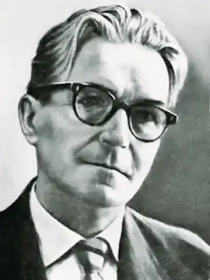
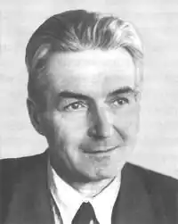

Борис Антоненко-Давидович (літературні псевдоніми Богдан Вірний і Б.Антонович) народився 5 серпня 1899 року в передмісті міста Ромни — Засуллі (тепер Сумської обл.) в родині машиніста-залізничника Дмитра Олександровича Давидова і Юлії Максимівни Яновської ("Антоненко-Давидович" одночасно є псевдонімом і прізвищем його прадідів — реєстрових козаків Антоненків). Закінчивши 1917 р. Охтирську гімназію, майбутній письменник вступає на природничий відділ Харківського університету, але невдовзі переводиться на історико-філологічний факультет Київського університету. Через матеріальні нестатки та безперервну зміну влади офіційно він так і не здобув вищої освіти, і йому довелося опановувати науку самотужки "в бібліотеках та з великої книги життя". 1920-1921 рр. ще зовсім юному Б.Антоненку-Давидовичу випало завідувати Охтирською повітовою наросвітою. В цей час, як свідчать його спогади, він "майже не бував у своєму "комісарському" кабінеті й більше крутився по школах, дитбудинках і садках, терся між селянами й ходив з рушницею в загоні ЧОНу проти Махна та місцевих повстанських ватаг, збирав продрозкладку й проводив вибори до Рад". Проте поступово стан ейфорії змінювався глибокими роздумами над особистими спостереженнями, пережитим і побаченим.
Не прийнявши НЕПу й не погоджуючись із практикою розв'язання національного питання, восени 1921 р. письменник виходить із КП(б)У і вступає до УКП. Восени 1923 року, переконавшись у марній діяльності цієї партії та не бажаючи "помножувати дяківський хор у московській церкві з філіалом в Україні", виходить з лав УКП й зосереджується на літературній діяльності. Якийсь час він був редактором (на посту секретаря редакції) найбільш популярного тоді ілюстрованого журналу "Глобус". На сторінках цього журналу Б.Антоненко-Давидович друкує перші літературні твори Олекси Влизька, Юрія Яровського, Марка Вороного та ін.
Власні літературні твори починає публікувати з 1923 року. У червневому номері журналу "Нова громада" за 1923 рік з'являється перше оповідання Б.Антоненка-Давидовича "Останні два". В "Червоному шляху" (№ 8) побачила світ його драма "Лицарі абсурду", а 1926 року — збірка оповідань "Запорошені силуети". Своє літературне "хрещення" письменник одержав у літературній організації "Ланка" (згодом — "Марс"), що відокремилось від строкатого "Аспису" (асоціації письменників). Членами групи "Ланка" була невелика, але творчо дуже сильна група молодих "попутників": Б.Антоненко-Давидович, Г.Косинка, В.Підмогильний, Є.Плужник, Б.Тенета, Т.Осьмачка, Д.Фальківський та ін. 1927 року в журналі "Життя й революція" (№№ 10-12) надруковано повість Б.Антоненка-Давидовича "Смерть". Наступного року вийшла в світ окрема книжка із невеличкою, але майстерно зробленою повістю "Тук-тук…" та двома оповіданнями. У "Смерті" письменник прагне дослідити й показати "незбагненну" більшовицьку силу й джерела її утвердження. Ця книжка стала значною подією в літературному процесі 20-х і завдала письменникові багато прикрощів, які значною мірою спричинилися до його двадцятирічних поневірянь. Понад шість десятиліть пролежала повість у спецсховах і лише у 1989 р. знову побачила світ. Своє ставлення до гострих проблем письменник виявляє через скрупульозний психологічний самоаналіз головного персонажу Костя Горбенка, який постійно перебуває в становищі дволикого Януса — думає і почуває одне, але партійний обов'язок та обставини (об'єктивні чи спричинені його ж діяльністю) змушують чинити всупереч його почуванням, переконанням і національним почуттям. Зрештою, дійшовши висновку, що нове життя, "купується кров'ю", "добувається смертю", і що "це новий негласний, суворий закон, якого не обійти", Кость вирішує стати "вольовим більшовиком", відкидає "к чорту всякі нерви й легкодухість". З нелюдською жорстокістю вбиває заручника… і стає йому від того "одразу порожньо всередині, навіть, по-особливому легко…" Постать Костя Горбенка та його драматична доля допомагає автору дослідити процес витравлення національної свідомості й гідності з людини, показати процес деградації українського інтелігента в безбатченка-яничара, який, в ім'я "світлого майбутнього", змушений зневажити своє минуле, зріктися свого народу і навіть батька й матері. Деякі ортодоксальні критики, ототожнюючи роздуми персонажа з думками й позицією самого автора, докоряли йому в безоглядній симпатії до Горбенка, у "проповіді вбивства", називали "апостолом гітлеризму" тощо. Більшість читачів схвально сприйняли твір, який засвідчив, що в літературу прийшов самобутній і талановитий письменник, суворий реаліст із досить гострим, сатиричним поглядом на життя, а його творам властиві іронічність, скепсис та іскристий гумор у змалюванні дійсності. Добре слово про повість "Смерть" висловив і нарком освіти республіки М.Скрипник, якому вона припала до вподоби. 1929 року Антоненко-Давидович випускає у світ збірки репортажів "Землею українською", в яких багато місця приділено національному відродженню. Після цього на письменника знову "впали звинувачення за те, нібито він "хворіє" на перебільшений національний бзик, який у нього домінує над усім", буцімто автор "засліплений націонал-шовінізмом", "неприкритим зоологічним націоналізмом" (А.Клоччя) тощо. Інший критик — А.Б.Коваленко — розпікає автора за національну обмеженість, адже він, мовляв, назвав свою книжку "Землею українською…" Масові арешти творчої інтелігенції, сфальсифікований процес над СВУ, самогубство М.Хвильового та М.Скрипника глибоко вразили Б.Антоненка-Давидовича й були сприйняті ним як свідомий і цілеспрямований наступ на українську літературу й культуру. Гнітило письменника й постійне шельмування, заборона друкувати роман-трилогію "Січ-мати", повернення з видавництва "Література і Мистецтво" роману "Борг" для докорінної переробки. Морально й матеріального його життя поступово стало нестерпним, і він був змушений тимчасово виїхати з України до Алма-Ати, де почав працювати у Держкрайвидаві редактором художнього сектора. Коли 1 грудня 1934 року в Смольному було вбито С.М. Кірова, у "вождя народів" Й.Сталіна з'явився привід для переходу в рішучий наступ проти інакомислячих та "ідейно ущербних": наступного дня в газетах опубліковано постанову про терористів-контрреволюціонерів, а за кілька днів по тому з наказу Сталіна і Єжова на вулиці міст та сіл країни було виведено наелектризовані юрмища з транспарантами спрямованими проти міфічних "ворогів народу", "шкідників", "терористів" та "агентів міжнародного імперіалізму" з рішучим закликом: "На смерть Кірова вдаримо нещадним ударом по недобитках класового ворога!" Почалися жорстокі репресії. Вже 5 грудня 1934 року заарештовано Є.Плужника. 17 грудня як "ворогів народу" і "терористів" було розстріляно друзів Антоненка-Давидовича — Г.Косинку, Д.Фальківського, К.Буревія, О.Влизька… Цунамі терору докотилося й до Казахстану. 2 січня 1935 року Антоненка-Давидовича заарештовано й під конвоєм відправлено до Києва. На допитах письменник тримався мужньо. На вимогу слідчого НКВС Хаєта зізнатися в приналежності до терористичної організації й видати своїх спільників в обмін на обіцянку зберегти письменникові його "мерзенне" життя, Б. Антоненко-Давидович відповів: "Я не знаю, які у Вас є засоби впливу на в'язнів під слідством. Та навіть коли б, припустимо, якимись невідомими способами вам пощастило зламати мене і я виказав би Вам на себе й на інших оцю фантасмагорію, і коли б ви не тільки дарували мені моє "мерзенне", як ви кажете, життя, а навіть випустили на волю, то я повісився б на першому ж сучку. Тому що таким людям як я, можна жити з переламаним хребтом, але з переламаним моральним хребтом я жити не зміг би. На це ви зважте". Єжовські опричники звинуватили письменника у "приналежності до контрреволюційної націоналістичної організації" (УВО), яка нібито силою зброї "прагнула повалити Радвладу на Україні і готувала індивідуальний терор проти Компартії і Радянської держави". На підставі цієї фальшивки Б.Антоненка-Давидовича було засуджено на 10 років концтаборів. Письменник пройшов усі кола ГУЛАГівського пекла, а після того був відправлений на довічне заслання в село з промовистою назвою Малоросєйка Больше-Муртанського району Красноярського краю. Після повернення до Києва у 1957 р., окрилений суспільно-політичною відлигою, Б.Антоненко-Давидович активно включається до літературного процесу. Уже наступного року він вирушає в мандри Україною. Враження від подорожей передає у збірках репортажів "Збруч" (1959) та "В сім'ї вольній, новій" (1960). Водночас допрацьовує привезений із заслання в чернетці роман "За ширмою", що публікується спочатку в журналі "Дніпро" (1961, № 12), а за рік після того твір виходить окремою книжкою і стає помітним явищем української прози. Проте одразу після виходу роману письменника знову починають звинувачувати в неблагонадійності, і йому стає надзвичайно важко надрукувати будь-який твір. Невиданими залишаються таборові нотатки з "захалявного зшитку", що склалися у збірку "Сибірських новел" (видані після смерті автора у 1989 р.). До самої смерті Б.Д.Антоненко-Давидовича, що настала 9 травня 1984 року, тривало принизливе цькування та замовчування письменника, який був змушений животіти на скромну пенсію. В той же час за кордоном, зокрема, в Болгарії, Польщі, Англії, Канаді, США і навіть далекій Австралії його твори видаються окремими книжками, широко відзначаються ювілеї письменника. Нарешті через 5 років після його смерті в Україні виходить його книга художньої прози — "Смерть. Сибірські новели. Завищені оцінки" — за яку йому посмертно в 1992 р. присуджено Державну премію ім. Т.Г. Шевченка. _________________________ Твори Бориса Антоненка-Давидовича, що вийшли окремими виданнями: В Україні: "Лицарі абсурду" (драма, 1924), "Запорошені силуети" (оповідання, повісті, нариси, 1925), "Тук-тук" (1926), "Смерть" (1928, 1929), "Справжній чоловік" (1929), "Шкапа", "Крижані мережки", "Печатка", "Землею українською", "Синя волошка" (1930), "Люди й вугілля", "Крила Артема Летючого" (1932, 1959), "Паротяг Ч-273" (1933), "Збруч" (1959), "В сім'ї вольній, новій", "Золотий кораблик" (1960), "Слово матері" (1964), "За ширмою" (роман, 1963), "Про що і як" (збірка статей, 1962), "В літературі і коло літератури" (1964), "На довгій ниві" (1967), "Як ми говоримо" (1970), ""Смерть", "Сибірські новели", "Завищені оцінки"" (1989). За кордоном: "Смерть" (Лондон, "Українська видавнича спілка", 1954), "Землею українською" (Філадельфія, "Київ", 1955), "За ширмою" (Мельборн, "Слово", 1972), "Як ми говоримо" (Балтимор, "Смолоскип", 1979; Нью-Йорк, "Науково-дослідне товариство української термінології", 1980), "Печатка" (Мельборн, "Ластівка", 1979), "Двісті листів Б.Антоненка-Давидовича" (Мельборн, "Ластівка" і "Слово", 1986). Іншими мовами: російською — "Крылья Артема Летуна" (1963); польською — "Za parawanem" (1974); англійською — "Behіnd the Curtіan" (1980), "Duel" (1986).